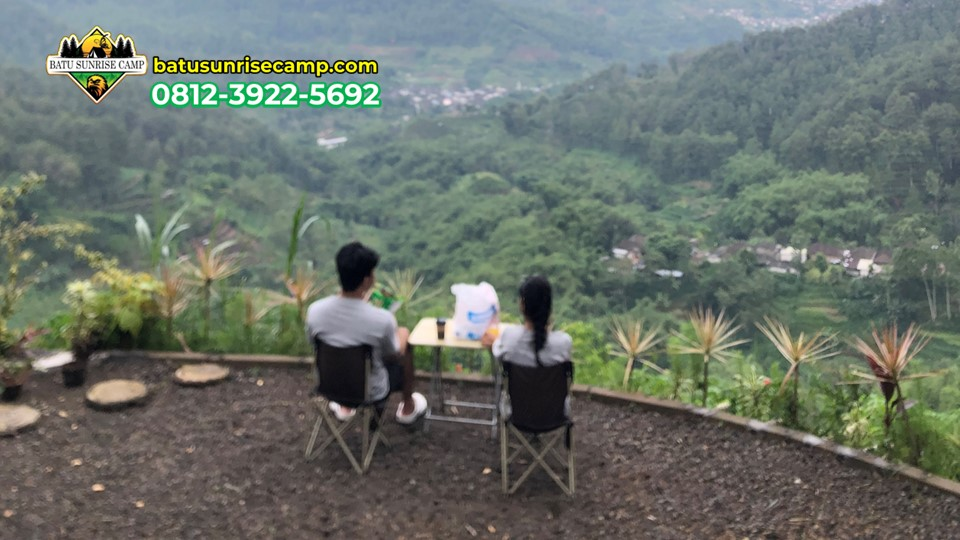

Pernahkah Anda mendongak ke langit malam dan merasa terpesona oleh ribuan bintang yang berkelap-kelip? Di tengah kehidupan perkotaan yang penuh polusi cahaya, pemandangan langit malam yang sebenarnya sudah menjadi kemewahan yang langka. Namun, ada satu cara sederhana untuk mendapatkan kembali keindahan ini: camping di ketinggian kawasan Batu Malang, Jawa Timur. Di sinilah langit malam menampilkan pertunjukan cahaya alami yang paling menakjubkan yang pernah Anda saksikan.
Batu Sunrise Camp tidak hanya menawarkan pemandangan matahari terbit yang spektakuler, tetapi juga menjadi salah satu spot terbaik untuk menikmati keindahan langit malam di kawasan Jawa Timur. Dalam artikel ini, kami akan membahas secara lengkap tentang pengalaman stargazing saat camping di Batu Malang, mulai dari persiapan, tips, hingga hal-hal menarik yang bisa Anda temukan di langit malam.
Mengapa Langit Malam di Batu Malang Begitu Istimewa?
Keistimewaan langit malam di kawasan Batu Malang disebabkan oleh beberapa faktor penting yang saling mendukung. Pertama, ketinggian lokasi yang berada di antara 700-1.700 meter di atas permukaan laut membuat Anda lebih dekat dengan atmosfer yang lebih tipis, sehingga bintang terlihat lebih terang dan jelas. Semakin tinggi posisi Anda, semakin sedikit lapisan atmosfer yang menghalangi pandangan ke langit.
Kedua, minimnya polusi cahaya di area pegunungan. Berbeda dengan kota besar yang dipenuhi lampu jalan, gedung, dan aktivitas malam, kawasan camping di Batu Malang memiliki tingkat polusi cahaya yang sangat rendah. Ini memungkinkan mata Anda menangkap cahaya bintang yang biasanya tertutupi oleh cahaya buatan di perkotaan. Anda akan terkejut betapa banyaknya bintang yang sebenarnya ada di langit!
Ketiga, udara yang bersih dan jernih di kawasan pegunungan membantu meningkatkan visibilitas langit malam. Partikel-partikel polusi udara yang biasa ditemukan di perkotaan dapat mengaburkan pemandangan langit, namun udara pegunungan yang bersih dari polusi menjadikan langit terlihat lebih transparan dan detail bintang lebih terlihat jelas.
"Langit malam di ketinggian Batu Malang adalah kanvas alam yang paling indah — jutaan bintang berkelap-kelip seolah merajut kisah kosmis yang menakjubkan di atas kepala kita." — Tim Batu Sunrise Camp
Persiapan untuk Stargazing
Waktu Terbaik untuk Stargazing
Tidak semua malam cocok untuk stargazing. Waktu terbaik untuk mengamati langit malam adalah pada malam yang cerah tanpa awan, idealnya pada fase bulan baru atau ketika bulan belum terbit. Cahaya bulan, terutama saat bulan purnama, bisa mengurangi visibilitas bintang secara signifikan. Musim kemarau (April-Oktober) umumnya memberikan malam yang lebih cerah dan stabil untuk observasi langit.
Jam terbaik untuk stargazing biasanya dimulai sekitar pukul 21.00 hingga dini hari. Pada jam-jam tersebut, langit sudah cukup gelap dan sebagian besar konstelasi sudah terlihat di posisinya. Jika Anda ingin melihat Galaksi Bimasakti dengan jelas, waktu terbaik adalah sekitar pukul 01.00-03.00 dini hari pada bulan-bulan tertentu ketika pusat galaksi berada di posisi optimal.
Perlengkapan yang Dibutuhkan
Untuk menikmati stargazing dengan nyaman saat camping, ada beberapa perlengkapan yang sebaiknya Anda siapkan. Pakaian hangat berlapis adalah yang paling penting karena suhu malam di ketinggian Batu bisa sangat dingin. Selain itu, bawa matras atau sleeping pad untuk berbaring dengan nyaman sambil memandang ke atas, selimut atau sleeping bag ekstra, jaket windproof karena angin malam bisa sangat menusuk, termos berisi minuman hangat seperti kopi atau coklat panas, serta buku panduan konstelasi bintang atau aplikasi stargazing di smartphone.
- Selimut tebal atau sleeping bag — Untuk berbaring dengan nyaman di alam terbuka
- Termos minuman hangat — Kopi, teh, atau coklat panas untuk menghangatkan badan
- Headlamp dengan filter merah — Cahaya merah tidak mengganggu adaptasi mata dalam gelap
- Binocular atau teleskop — Opsional namun sangat meningkatkan pengalaman
- Aplikasi stargazing — Seperti Stellarium, Sky Map, atau Star Walk untuk identifikasi bintang
- Kamera dengan mode night/long exposure — Untuk mengabadikan keindahan langit malam
Baca Juga:
Aktivitas Seru yang Bisa Dilakukan saat Camping di Batu Tips Camping di Batu Malang agar Pengalaman Makin BerkesanApa Saja yang Bisa Dilihat di Langit Malam?
Galaksi Bimasakti (Milky Way)
Salah satu pemandangan paling menakjubkan yang bisa disaksikan dari camping ground di Batu Malang adalah Galaksi Bimasakti atau Milky Way. Galaksi spiral yang menjadi rumah bagi tata surya kita ini tampak sebagai pita cahaya yang membentang dari satu sisi langit ke sisi lainnya. Dari ketinggian dan tanpa polusi cahaya, Bimasakti terlihat sangat jelas dengan warna-warna halus yang indah, dari putih kebiruan hingga kecoklatan di bagian pusatnya.
Untuk melihat Bimasakti dengan jelas, waktu terbaik di belahan bumi selatan seperti Indonesia adalah pada bulan April hingga September, ketika pusat galaksi berada di posisi yang optimal di langit malam. Di Batu Sunrise Camp, area camping kami yang terbuka memberikan pandangan langit 360 derajat yang sempurna untuk mengamati keseluruhan bentang Bimasakti dari horison ke horison.
Konstelasi Bintang
Dari camping ground di Batu, Anda bisa mengidentifikasi berbagai konstelasi bintang yang terkenal. Beberapa konstelasi yang mudah dikenali antara lain Orion dengan sabuk bintangnya yang khas, Crux (Salib Selatan) yang menjadi penunjuk arah selatan, Scorpius dengan bintang Antares yang berwarna kemerahan, serta berbagai konstelasi zodiak yang lainnya. Menggunakan aplikasi stargazing di smartphone, Anda bisa dengan mudah mengidentifikasi setiap konstelasi hanya dengan mengarahkan ponsel ke langit.

Suasana camping malam hari di Batu Sunrise Camp — ketenangan alam dan keindahan langit malam menyatu dalam harmoni sempurna.
Planet dan Objek Langit Lainnya
Selain bintang dan konstelasi, ada banyak objek langit menarik lainnya yang bisa diamati. Planet-planet terang seperti Venus, Jupiter, dan Saturnus sering terlihat sangat jelas tanpa perlu alat bantu. Jika Anda membawa binocular atau teleskop kecil, Anda bahkan bisa melihat cincin Saturnus, bulan-bulan Jupiter, permukaan bulan dengan detail kawahnya, nebula seperti Nebula Orion yang berwarna kemerahan, dan gugus bintang atau star clusters yang menakjubkan.
Tips Fotografi Langit Malam
Bagi Anda yang ingin mengabadikan keindahan langit malam, ada beberapa tips fotografi yang bisa dicoba. Gunakan mode manual (M) pada kamera, setting ISO tinggi (1600-6400), bukaan lebar (f/1.8 - f/2.8 jika memungkinkan), dan speed lambat (15-30 detik). Gunakan tripod untuk menghindari getaran, dan timer atau remote shutter untuk menghindari goyangan kamera saat menekan tombol. Untuk smartphone, banyak yang sudah memiliki mode Night atau Pro yang bisa digunakan untuk fotografi langit malam.
Tips khusus: cobalah teknik "500 Rule" yaitu bagi angka 500 dengan focal length lensa Anda untuk mendapatkan shutter speed maksimal tanpa membuat bintang terlihat garis (star trail). Misalnya, dengan lensa 24mm, shutter speed maksimal adalah 500/24 = sekitar 20 detik. Ini akan menghasilkan bintang yang terlihat titik terang, bukan garis.

Hasil fotografi langit malam dari camping ground — teknik long exposure dapat menghasilkan foto yang menakjubkan.
Stargazing di Batu Sunrise Camp
Batu Sunrise Camp menyediakan spot khusus untuk stargazing yang terletak di area terbuka dengan minim gangguan cahaya. Pengunjung yang memilih Paket Premium mendapatkan panduan dasar stargazing dari guide kami, termasuk pengenalan konstelasi utama dan cerita mitologi di baliknya. Kami juga sesekali mengadakan acara stargazing bersama yang diikuti oleh semua tamu camping, dilengkapi dengan teleskop dan minuman hangat.
Suasana stargazing di Batu Sunrise Camp sangat istimewa. Bayangkan: Anda berbaring di atas matras empuk, diselimuti sleeping bag yang hangat, ditemani secangkir kopi panas, sambil memandang langit yang bertabur jutaan bintang. Di sekitar Anda, suara jangkrik dan hembusan angin malam menciptakan symphoni alam yang menenangkan. Ini adalah pengalaman yang tidak bisa Anda dapatkan di hotel bintang lima manapun.

FAQ — Pertanyaan yang Sering Diajukan
Kesimpulan
Menikmati keindahan langit malam saat camping di Batu Malang adalah pengalaman yang sangat istimewa dan transformatif. Di tengah hiruk pikuk kehidupan modern yang serba cepat, momen menatap langit bertabur bintang dari ketinggian pegunungan memberikan perspektif baru tentang betapa luasnya alam semesta dan betapa kecilnya kita di dalamnya. Ini adalah pengalaman yang tidak hanya memanjakan mata, tetapi juga menyentuh jiwa.
Batu Sunrise Camp memberikan kesempatan terbaik untuk menikmati keindahan ini dalam kenyamanan dan keamanan camping ground yang terkelola dengan baik. Jangan lewatkan kesempatan untuk menyaksikan keajaiban langit malam di kawasan Batu Malang. Hubungi kami sekarang di 081239225692 melalui WhatsApp untuk reservasi Anda dan persiapkan diri untuk petualangan malam yang tak terlupakan!